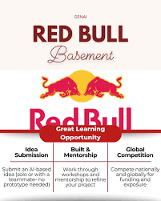
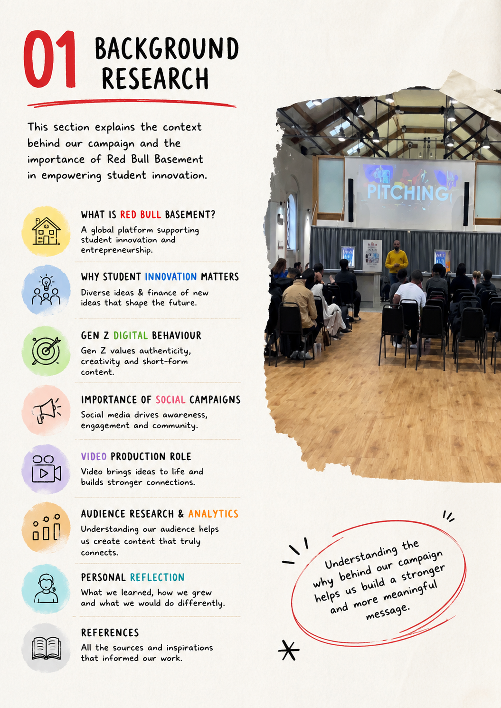
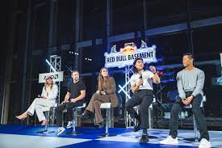
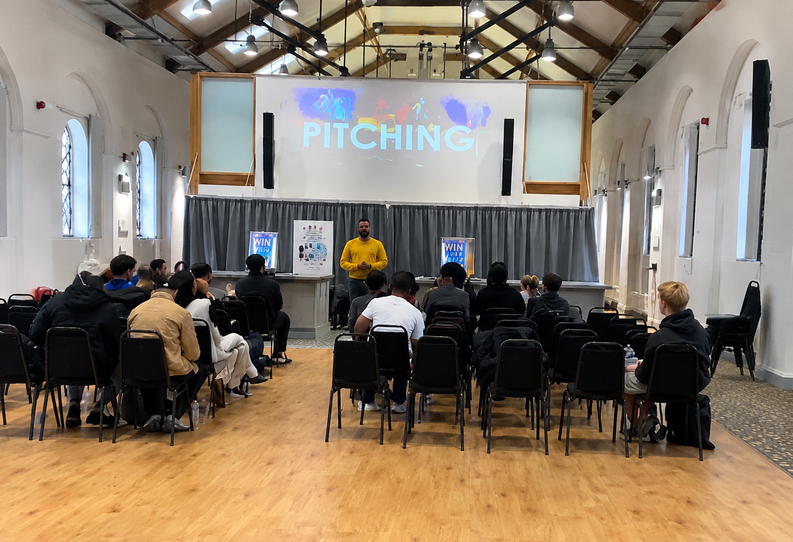
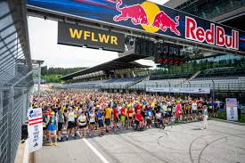

Presented by: Reece Ashley
University: University of Northampton
Class Project: Marketing & Campaign Design | 2026
My Role: Social Media Copywriter, Visual Designer & Event Photographer
This e-portfolio highlights my work as a Social Media Copywriter, Visual Designer, and Photographer for the Red Bull Basement University Campaign. It showcases visuals, photography, and social media content designed to engage university students and Gen Z audiences.

Campaign overview visual.
Background Research
To create a meaningful and engaging campaign for Red Bull Basement, it was essential to understand the context and behaviors of university students. Red Bull Basement is a global initiative that empowers students to develop innovative solutions and share creative ideas, providing mentorship and exposure to bring their concepts to life.
Student innovation is significant because it nurtures fresh perspectives and encourages practical problem-solving skills. Supporting these initiatives helps students turn abstract ideas into real-world projects, fostering collaboration, creativity, and critical thinking.
Understanding Gen Z’s digital behavior was key. This generation values authenticity and originality, preferring content that is visually striking, concise, and relatable. Platforms such as Instagram and TikTok dominate their attention, so campaign materials were tailored for short-form, dynamic digital experiences.
Finally, social campaigns not only raise awareness but also build community and encourage peer interaction. Aligning the campaign with these insights ensured that content was both compelling and relevant, fostering participation and engagement across the target student audience.


Idea Generation
during idea generation I used:
Brainstorming Sessions: Explored a wide range of ideas from every team member.
Collaboration: Open discussion and constructive feedback helped refine concepts.
Creative Exploration: Experimented with formats, messaging styles, and engagement methods.
Final Idea Selected: TikTok Innovation Challenge to encourage student participation.
Our Focus: Create a student-driven campaign that connects, inspires, and leaves a lasting impact.
Top Ideas Identified:
- TikTok Innovation Challenge
- Instagram Reels Series
- Student Testimonial Videos
- Countdown Posts
- Interactive Polls & Quizzes
- Behind-the-Scenes Content
Our ultimate goal was to design a student-driven campaign that connects, inspires, and leaves a lasting impact within the university community.

Visual representation of top campaign ideas and creative brainstorming outputs.
Pitching Ideas
I structured the campaign presentation from problem → insight → idea → strategy → execution.
I Presented campaign ideas to peers and mentors during a live pitching session. Feedback helped refine visuals, copywriting, and content layout for student engagement.
I led the presentation of our campaign idea, ensuring the story of our concept was clear and persuasive. I coordinated the visual and textual content to align with Red Bull Basement’s goals and incorporated the suggestions from my audience to strengthen the strategy.

Social Media Design
Created Instagram layouts, typography, and color palettes using Canva. Photography assets were integrated into designs to ensure consistent branding and visual appeal.
Video Production
Contributed photography and visuals to campaign videos. Assisted in scripting, filming, and editing to maintain consistent visual branding.
Audience Research & Analytics
Conducted audience surveys, engagement analysis, and KPI planning. KPI metrics shown are illustrative for planning purposes only.

Process Evidence
Included are screenshots of Canva drafts, brainstorming notes, and live campaign photos to demonstrate personal contribution and workflow.
Personal Reflection
During the campaign, I faced the challenge of adapting visual templates to feel authentic for university students. Iterating Instagram layouts and refining typography improved my graphic design, photography, and social media content skills while reinforcing teamwork and problem-solving.
Participating in Red Bull Basement was more than a competition,it was a journey of growth, creativity, and self-discovery.
Key Lessons:
1.Creative Confidence: Learned to trust my ideas and turn them into impactful, original solutions. 2.Teamwork & Collaboration: Working with a diverse team taught me the value of listening, sharing, and building together. 3.Resilience: Overcoming challenges and feedback loops strengthened my adaptability and persistence. New Skills: Gained hands-on experience across research, video production, and analytics. 4.Purpose & Impact: Realized the power of ideas to inspire, connect, and create meaningful change.
Next Steps:
I will continue learning, creating, and collaborating to bring more ideas to life and make a positive impact in the world. Keep producing engaging content Collaborate with like-minded peers Expand ideas on larger platforms Key Takeaway: Red Bull Basement empowered me to think bigger, act bolder, and believe in the impact of my ideas.
References
HubSpot, Statista, Mintel, WARC, Academic Journals.